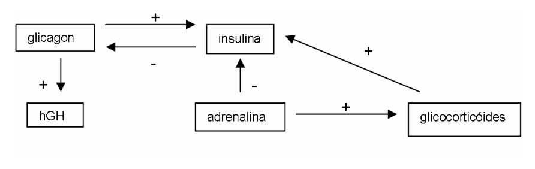

42 Metabolismo do Músculo e do Exercício Físico - As Rotas
42.1 Introdução
O exercício muscular é a atividade fisiológica mais integrada que existe. Esta integração envolve neurotransmissores, hormônios, organelas, tecidos e orgãos inteiros, onde o mapa de rotas bioquímicas se expressa dependendo do alvo a ser buscado na atividade contrátil. Neste sentido, um esboço da bioquímica do exercício físico e muscular será apresentado em dois textos separadamente, um referente ao arcabouço estrutural e metabólico, assunto deste texto, e outro sobre o metabolismo nos estados de repouso, trabalho, adaptação, limite e exaustão muscular.
42.2 Detalhes
42.2.1 Fibras musculares.
Tecidos musculares podem ser do tipo esquelético, cardíaco ou liso, os dois primeiros sendo estriados e representando o bloco contrátil do corpo. Possuem células multinucleadas e são alongados, razão pela qual são denominados por fibras. A fibra é revestida externamente pela membrana do sarcolema, com citoplasma denominado por sarcoplasma. O conteúdo sarcoplasmático contém inúmeras mitocôndrias e a unidade contrátil miofibrila, feixes protéicos alongados. Cada miofibrila possui um módulo contrátil denominado sarcômero, e definido pela coloração de bandas longitudinais. Os músculos são divididos em brancos e vermelhos. Os brancos realizam muita anaerobiose (glicólise, fosfocreatina), sendo habilitados para contração rápida, ao passo que os vermelhos, com muitas mitocôndrias, são mais direcionados para o metabolismo respiratório. São também mais resistentes devido ao maior teor de colágeno interfibrilar. Curiosamente, o treinamento aumenta as propriedades naturais de cada fibra. O levantador de peso aumenta os teores da fibra branca (tipo II), ao passo que o maratonista, fibras vermelhas (tipo I). Os tecidos musculares não armazenam energia, apenas a utilizam, concedendo 1 a 2% de glicogênio e 2 a 4% de gordura em suas estruturas.
42.2.2 Reservas energéticas para o esforço físico.
São constituidas por triglicerídeos, glicogênio, proteínas e fosfocreatina. Os depósitos de gordura humanos, de 8 a 15Kg em média (adulto masculino 1,80m, 70Kg) possuem 50% de ácido oléico e 25% de palmítico. Apesar de existir alguma reserva de ácido graxo muscular (300g), a grande parte encontra-se no tecido adiposo, ubíquo no organismo (musculatura subcutânea abdominal, subescapular e mesentérica). Dessa forma os ácidos graxos são mobilizados por transporte sanguíneo até o músculo em operação. O glicogênio está armazenado no fígado (10% do peso úmido), para os tecidos em geral, e no músculo (2% do peso úmido), para o próprio usufruto. Porém, como as massas musculares são maiores que a hepática, há mais glicogênio muscular no corpo (350g) do que no fígado (85g). Não obstante, os depósitos hepáticos são bastante relevantes para a atividade muscular. Comparando a eficiência dos estoques glicídicos e gordurosos, um maratonista esgotaria suas reservas de glicogênio em 60min, e de triglicérides em 70h. Nas práticas esportivas, uma ordem crescente de utilização do glicogênio poderia ser corrida de 200m, futebol, natação, maratona e corrida de 10 mil metros.
As proteínas musculares servem à atividade contrátil, não sendo degradadas pelo organismo a não ser para reposição (turnover) ou em situações patológicas (jejum prolongado, trauma). A meia-vida proteínas musculares diminui com o esforço físico, aumentando sua taxa de renovação, o que respalda o aconselhamento de maior consumo de carne por atletas.
42.2.3 Vias metabólicas do trabalho muscular.
Não são distintas daquelas utilizadas em outras situações fisiológicas. Assim, temos a lipólise, glicogenólise, \(\beta\)-oxidação dos ácidos graxos, glicólise, cetólise, oxidação de aminoácidos, ciclo da uréia e dos nucleotídeos de purina. A lipólise mobiliza os depósitos de gordura na medida em que leva à produção de hormônios que chegam aos adipócitos, razão pela qual massagens de remoção de gordura localizada são pouco eficientes, já que a lipólise é humoral e não local.
A glicogenólise muscular desdobra o glicogênio até glicose-6-P, não ocorrendo a defosforilação desta por não haver no músculo a glicose-6-fosfatase. Por consequência a glicose fica aprisionada para oxidação nas fibras. Assim sendo, o glicogênio hepático pode aumentar a glicemia, mas o muscular não. A \(\beta\)-oxidação dos ácidos graxos no músculo não está sujeita à regulação hormonal, dependendo apenas de 2 proteínas. Sendo assim sua utilização pela fibra depende essencialmente de sua concentração no plasma e de seu consumo intracelular. Apenas os ácidos graxos de cadeia longa são utilizados pelos tecidos musculares, porque são os únicos que o tecido adiposo a eles oferece.
Para a degração mitocondrial requerem um complexo sistema de transporte no qual desempenha papel essencial a carnitina. Teores de carnitina podem definir estados de fraqueza muscular. Uma vez internalizados os ácidos graxos são oxidados à acetil CoA, que entra no ciclo de Krebs e cadeia respiratória para produção de ATP. Curiosamente, não existe possibilidade da fibra produzir corpos cetônicos a partir do excesso de acetil CoA, pois aquela não possui arcabouço enzimático satisfatório para tal. A glicólise muscular também difere da hepática, já que no músculo não há glicose-6-fosfatase, permitindo ao tecido uma auto-sustentação energética temporária e independente.
Além disso, a glicólise possui importante controle alostérico positivo mediado sobre a fosfofrutoquinase-1 (PFK-1), principalmente pela frutose 2,6-difosfato, e secundariamente por ADP, AMP e NH3. À excessão da Fru26dP, nenhuma dessas substâncias têm efeito sobre a PFK-1 hepática. Citrato e ATP inibem a PFK-1 muscular, mas não a hepática, já que sua inibição impediria a lipogênese que ocorre no excesso daqueles (ativação da citrato liase e acetil CoA carboxilase). Fosforilações hepáticas também ocorrem de forma diferencial no músculo. Assim, a fosforilação inibe a PFK-1, a piruvato quinase, a piruvato desidrogenase e acetil CoA carboxilase. No sarcoplasma não, garantindo que a glicose livre do plasma seja convertida a acetil CoA.
A glicólise muscular origina o lactato, quando não houver NAD+ suficiente para a conversão de piruvato em acetil CoA. A alta afinidade muscular (Km) da lactato desidrogenase faz com haja grande produção deste no tecido (piruvato -> lactato). Entretanto, o tecido hepático e, principalmente o cardíaco (metabolismo muito oxidativo), operam de forma reversa (lactato->piruvato), mas só quando houver níveis excepcionais de lactato. Isto demonstra como o significado do ciclo de Cori está geralmente superestimado. A cetólise é a oxidação dos corpos cetônicos produzidos no fígado (cetogênese) e utilizada extra-hepaticamente, convertendo hidroxibutirato e acetoacetato em acetil CoA.
Esta rota é importante na hipoglicemia e no exercício físico, constituindo uma fonte alternativa de ATP, principalmente para o tecido nervoso. A oxidação de aminoácidos tem destino prioritário no equilíbrio dinâmico de proteínas (excessão para o jejum eexercício físico). O aminoácido ramificado leucina (Leu), entretanto, tem seu destino encaminhado exclusivamente para oxidação à acetil CoA no músculo, sendo também o único incapaz de produzir glicose (o músculo não faz gliconeogênese, pois não possui piruvato carboxilase). O metabolismo de aminoácido libera NH3, tóxico por drenar o \(\alpha\)-cetoglutarato do ciclo de Krebs, provocando coma e morte. Neste sentido, o corpo converte a amônia tóxica em uréia. Mais uma vez, os músculos são excessão, já que não possuem as enzimas do ciclo da uréia (na realidade, só o fígado a conduz). Ao invés disso, transformam amônia em alanina (Ala) e glutamina (Gln), nos ciclos glicose/Ala e Glu/Gln.
O primeiro converte a amônia em Ala que deixa o músculo para a gliconeogênese hepática, e o segundo em Gln, utilizável pelos intestinos e rins, mas com retorno hepático na forma de Glu, caso contrário pode haver o mesmo esgotamento do -cetoglutarato do ciclo do citrato. O reforço de \(\alpha\)-cetoácidos para este ciclo pode vir da deaminação da aminoácidos. Atletas que usam anabolizantes, essencialmente hepatotóxicos, e consomem muita carne, correm risco de intoxicação por amônia e incapacitação para atividade física. Um aminoácido de especial atenção no exercício físico é o triptofânio (Trp). O Trp é carreado pela albumina, a qual também transporta ácidos graxos durante o trabalho contrátil. O Trp é convertido no neurodepressor serotonina, o que induz ao sono e fadiga mental observados ao final de competições de média intensidade. Finalmente, o ciclo dos nucleotídios de purina (PNC) representa uma forma extrema de aproveitamento energético pelo músculo (AMP, vasodilatador, e NH3 estimulam PFK-1 muscular e aporte de O2 ao músculos), mas com a desvantagem de produção local de radicais livres (radical superóxido e peróxido de hidrogênio), o que ocorre no esforço muscular máximo, devendo ser portanto evitado.
42.2.4 Hormônios no exercício físico.
Modificações instantâneas durante o exercício físico, em fosforilações/defosforilações enzimáticas e suas concentrações sarcoplasmáticas, são mediadas por hormônios. A fisiobioquímica hormonal nos mostra que nenhuma atividade contrátil é bem sucedida na presença de endocrinopatias, mas também que as mesmas podem ser atenuadas com o exercício físico, nos casos onde a terapêutica e a nutrição já não exercem efeito. Os principais hormônios relacionados à atividade muscular são as catecolaminas (adrenalina, noradrenalina), o glicagônio, e os glicocorticóides, por um lado catabólicos, o hormônio de crescimento (hGH), e a insulina, por outro, anabólicos. A adrenalina é secretada pela medula supra-renal e a noradrenalina pelas terminações simpáticas (age na vasculatura), ambas agindo lipoliticamente e glicogenoliticamente, e sendo mimetizadas pelo anabolizante efedrina. Ambas inibem a secreção de insulina e estimulam a de glicagônio.
Em síntese, são hiperglicemiantes, assegurando abundante oferta de glicose ao SNC. Em poucos segundos a adrenalina aumenta significativamente as frequências respiratórias e cardíaca, provoca vasodilatação periférica e vaconstrição esplâncnica. Com o aumento da perfusão sanguínea e da oferta de substratos, os tecidos ficam mais oxigenados e com mais combustíveis. O glicagônio também é hiperglicemiante, e age diretamente no fígado e tecido adiposo, influenciando posteriormente o metabolismo do músculo e do SNC. Seu móvel fisiológico central é a hipoglicemia, estimulando a glicogenólise e a gliconeogênese. No tecido adiposo o glicagônio estimula discretamente a lipólise.
ara a gliconeogênese o fígado enfraquece o ciclo de Krebs, o qual pode ser restabelecido com a \(\beta\)-oxidação. Sobra acetil CoA que pode ser convertido em corpos cetônicos, utilizáveis por tecidos extra-hepáticos, como o SNC e músculo. A glicose que a gliconeogênese oferece é primordialmente parao SNC e hemácias. Como o glicagônio é um modulador do repouso, ele não possui receptores musculares. No entanto, aminoácidos do seu tecido podem ser utilizados para o ciclo de Cori. A massa muscular diminui, mas a glicemia é mantida. Os glicocorticóides são produzidos pela córtex supra-renal, estimulada tipicamente pelo estresse. O objetivo também é similar ao do glicagônio, qual seja, manter o organismo funcionando à despeito da carência alimentar.
O tecido muscular possui receptores para glicocorticóides, os quais inibem aí o ingresso de aminoácidos e glicose, deprimindo drasticamente a ressíntese protéica. Há um aumento na oxidação de aminoácidos e risco potencial na redução de anticorpos e reações inlamatórias. A teleológica é que a hipoglicemia é uma presença e a chegada do agente infeccioso apenas uma possibilidade. O hormônio de crescimento hGH secretado pela hipofise mimetiza a ação do glicagônio, qual seja, a neoglicogênese, cetogênese e lipólise. De fundamental importância, estimula a síntese hepática de somatomedinas, peptídios de ação preponderantemente anabolizante e oposta ao do hGH que lhe originou. No tecido muscular as somatomedinas aumentam a glicogenogênese e a sintese de proteínas (captação respectiva de glicose e aminoácidos são, entretanto, destituidas de ação lipogênica, o que as torna promissores anabolizantes de uso comercial. De fato, constituem praticamente a única barreira de defesa contra a avalanche catabólica que aparece na hipoglicemia e no exercício físico.
Por fim, a insulina, hormônio da saciedade, aumenta os processos de construção das massas moleculares de reserva ou aquelas destinadas ao gasto de combustíveis específicos. No fígado, a insulina ativa a lipogênese e gliconeogênese, no adipócito a lipogênese, e no músculo, a glicogenogênese, constituindo um regulador caracteristicamente anabolizante. Alguns tecidos são insensíveis à ação insulínica, como o SNC e hemácias. Como a insulina, juntamente com as somatomedinas, são os únicos hipoglicemiante, é fácil verificar que o organismo está mais preparado para fabricar glicose do que para consumi-la. A insulina também ativa o transportador GLUT-4 muscular, não exclusivamente dependende daquela, o qual aumenta as taxas de internalização celular de glicose. Se quisermos estabelecer um quadro para o controle hormonal, este pode ficar como segue:
